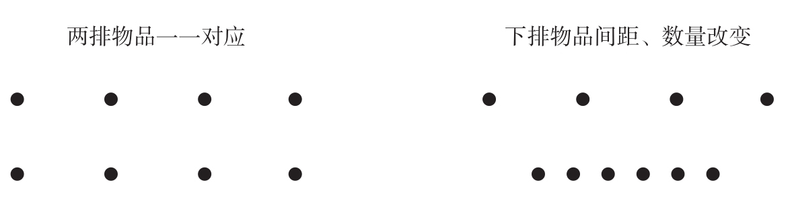

现在我们知道，皮亚杰建构主义的这部分内容是错误的。显然，幼童在算术方面确实有很多要学习的地方，他们对数字的概念性认识也确实是随着年龄的增长和教育的深入而逐渐提升的。但是，即使他们刚刚出生，也并不是完全没有对数字的真正的心理表征！只是我们需要使用适合他们年龄的研究方法来进行测试。皮亚杰所推崇的测试没有能够反映儿童真正的能力。其中最主要的缺陷在于，这一测试依赖实验者和幼小的被试之间的开放性对话。儿童是否真的理解了所有问题？最重要的是，他们对问题的理解是否与成年人对问题的理解一样？有多种理由让我们对此给出否定的答案。运用类似于动物实验的情境，用非语言的方式对儿童的思维进行探测时，他们表现出相当强的数字能力。
以经典的皮亚杰数量守恒实验为例。早在1967年，在著名的《科学》杂志上，美国麻省理工学院心理学系的杰柯·梅勒和汤姆·贝弗（Tom Bever）发表文章，证明这项测验的结果会随背景和儿童动机水平的改变而发生根本性的变化3。他们为2至4岁的儿童设计了两种实验。在第一种实验中，实验者将弹珠排成两排，与传统的数量守恒测试情境相似，其中较长的一排只有4枚弹珠，而较短的一排有6枚弹珠（见图2-1）。当询问儿童哪一排有更多的弹珠时，大多数3到4岁的儿童都会错误地选择更长但是弹珠数量更少的那排。这和皮亚杰的经典实验中被试儿童的发现并无二致。

当两排物品以一一对应的方式排列时（左图），3到4岁的儿童会报告它们数量相等。如果把下面一排缩短并且增加两个物品（右图），儿童会报告上面一排有更多的物品。这是首先由皮亚杰发现的一个经典错误：儿童以物品列的长度而非物品数量为判断依据。然而梅勒和贝弗在1967年证实，当测试物品是巧克力豆时，儿童能够自发地选择下面那一排。因此，皮亚杰所发现的错误不能归咎于儿童没有能力进行算术，而应该归因于数量守恒测试中不够严谨的实验条件。
图2-1 皮亚杰数量守恒实验
资料来源：Mehler & Bever, 1967。
然而，在第二种实验中，梅勒和贝弗的策略是将弹珠换成美味的食物（巧克力豆）。儿童不需要回答复杂的问题，而是可以选择两排中的一排并马上吃掉它们。这一程序的优点在于回避了语言理解的障碍，同时增加了儿童选择物品更多的那一排的动机。确实，使用巧克力豆进行测试时，大多数儿童都选择了两排中数量较多的那一排，即使物品列的长度和数量是矛盾的。这项测试展现了一个令人震撼的结果：儿童的计算能力与他们对巧克力豆的喜爱同样不容忽视！
虽然这个结果与皮亚杰的理论矛盾，但是3至4岁的儿童能够选出数量更多的一排巧克力豆可能并不令人惊讶。在梅勒和贝弗的实验中，不论是使用弹珠还是巧克力豆，2岁左右的儿童都表现优异，只有年龄较大的儿童才会在弹珠数量守恒测试中失败。儿童数量守恒测试成绩似乎在2至3岁期间暂时下降了。但是3至4岁儿童的认知能力显然不低于2岁儿童。因此，皮亚杰的测试不能够衡量儿童真实的数字能力。因为某些原因，这些测试会迷惑年长的儿童，使得他们比弟弟妹妹表现更差。
我认为事实是这样的：3至4岁的儿童以不同于成年人的方式来理解实验者的问题。问题的措辞和背景误导了儿童，让他们以为自己需要判断物品列的长度而不是物品的数量。在皮亚杰的原始实验中，实验者将完全相同的问题问了两遍：“两者是相同的吗？哪一排有更多的弹珠？”他第一次提出这个问题的时候，两排弹珠完全一一对应，再一次提问时，弹珠列的长度被改变了。
面对这两个连续的提问，儿童会怎么想呢？让我们假设儿童完全明白两排弹珠数量是相等的。他们一定会奇怪为什么大人会将无关紧要的相同问题重复两次。事实上，问一个对话双方都知道答案的问题违反了一般的对话规则。面对这个内在矛盾，儿童可能会认为，虽然从表面上来看第二个问题与第一个问题完全相同，但其意义却完全不同。可能孩子们的脑海中会有如下的推理：
如果大人将一个问题重复了两遍，那一定是因为他们在期待一个不同的答案。但是相对于前一种情境，唯一发生了变化的就是其中一排物品的长度。因此，新的问题一定与长度有关，虽然它看上去与数量有关。我猜我最好根据长度而不是根据数量来回答。
3到4岁的儿童完全可以实现这个严密的推理过程。事实上，这类无意识的推理是理解许多句子的基础，包括儿童能够创造和理解的那些句子。我们每天都会进行上百次类似的推断。理解一句话需要透过字面意思去获得说话者本来的意图。在许多情况下，一句话的实际含义可能与字面的意思完全相反。我们谈及一部好的电影时会说：“不赖啊，不是吗？”当我们问“你能把盐递过来吗”时，我们肯定不满足于对方仅仅回答一声“能”。这些例子证明，我们常常会根据对方的意图进行无意识的复杂推理，进而重新解释我们听到的句子。我们有理由认为，儿童在测试中与成人对话时，会进行相同的推断过程。事实上，这个假设看起来很有道理，因为梅勒和贝弗发现正是三四岁的儿童无法通过数量守恒的测试。根据意图、信念和对他人的理解进行推理的能力恰好在这一时期开始形成，这种能力被心理学家称为“心理理论”（theory of mind）4。
英国爱丁堡大学的两位发展心理学家詹姆斯·麦加里格尔（James McGarrigle）和玛格丽特·唐纳森（Margaret Donaldson）明确地检验了这个假设：儿童在皮亚杰的测试中不能“守恒数量”，是因为他们误解了实验者的意图5。在他们的实验中，一半的轮次按照传统方式进行，在这些轮次中，实验者改变某一排的长度，然后询问：“哪一排更多？”而在另一半的轮次中，长度的改变由一只“泰迪熊”来完成。当实验者适时地看向其他地方的时候，一只“泰迪熊”意外地闯入并改变了其中一排的长度。然后实验者转过头来并且惊叫道：“哦不！这只愚蠢的泰迪熊又弄乱了所有东西。”只有在这时，研究者才问这样的问题：“哪一排更多？”这样设计的原因是，在这种情况下，这个问题显得十分真诚并且只要根据字面意思来理解就可以。因为是玩具熊弄乱了两排物品，成人不再知道物品有多少个，因此才会询问儿童。在这种情境下，大多数儿童并没有受到物品摆放长度的影响，而是根据数量做出了正确的回答。而在实验者有意对长度进行改变时，这些儿童却会根据物品摆放的长度而做出错误的回答。这个实验证明了两点：其一，即便是儿童也能根据情境对完全相同的问题给出两种完全不同的解释。其二，与皮亚杰的结论相反，在有意义的情境下提出问题，儿童能够给出正确的答案——他们具有数量守恒的概念！
我不想让这项讨论成为一种误导。我当然不认为儿童未能通过皮亚杰的数量守恒测试是一个没有价值的现象。相反，这是一个相当活跃的研究领域，仍然吸引着世界上的许多研究者。在上百次实验后，我们仍然不清楚为什么儿童能够如此轻易地被不合理的线索欺骗，比如，在他们应该判断数量多少时却被物品列的长度所迷惑。一些科学家认为，皮亚杰任务中的失败反映了前额叶皮层的持续成熟过程，这部分脑区使我们能够选择一种策略并且能不受影响地坚持下去6。如果该理论被证实，那么皮亚杰的测试就被赋予了新的内涵，它将成为儿童抵抗分心的能力的行为标志。继续探索这一观点将是其他书的内容。我在这里提及这个观点的唯一目的是想告诉读者，我们现在已经确定了皮亚杰的测试不能反映什么。与皮亚杰的意图相反，这些测试并不能很好地测出儿童何时开始理解数字概念。